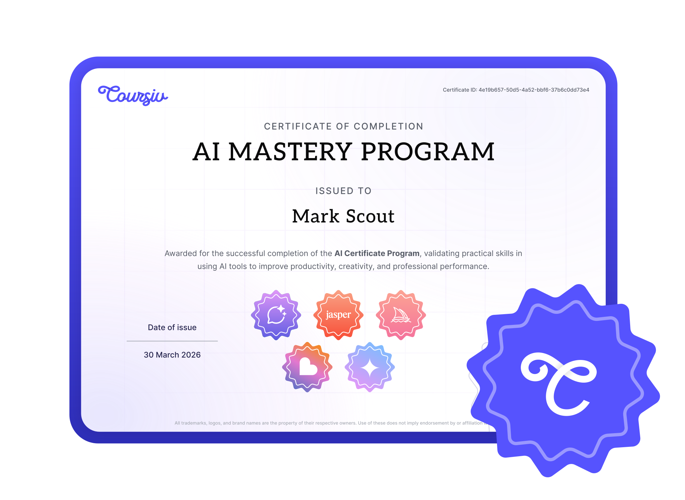

Invited
Training never stops and Learning never ends.
Training never stops, learning never ends. This is a great place to build your confi…
Guy Pierce · November 24
Coursiv: AI Certificates
Learn real-world AI tools, complete guided pathways, and earn certificates that showcase your progress.
Start LearningMore than 800,000+ people started

Structured learning paths designed to help you build practical AI skills and earn certificates upon completion.
Each program includes guided lessons, hands-on tasks, and a final assessment.
Explore Certificates5 Courses
Official Certificate
Complete the structured program, pass the final assessment, and receive a Coursiv-issued certificate recognizing your AI skills.
Showcase your AI learning achievements on your professional profile.
Each certificate includes a unique verification link to confirm completion.
Demonstrate applied AI knowledge through structured coursework and assessment.
Begin AI Certificate ProgramInvited
Training never stops, learning never ends. This is a great place to build your confi…
Guy Pierce · November 24
Invited
Amazing program, I loved the explanations and the format of doing the quiz which make…
Joyujinbeba$ · November 23
Invited
Coursiv is a fantastic learning platform—easy to use, well-organized, and full of cle…
Cheryl Holiday · November 22
Invited
This starts out real basic and slowly builds to more advanced. You learn how to build…
DandDay · November 22
Invited
I have been using ChatGPT but did not know that using GPT5 would give me more detail…
tcitecomish · November 22


The AI Certificate Program is a structured learning path designed to help you build practical AI skills. Each program includes guided lessons, hands-on exercises, and a final assessment. After successful completion, you receive a Coursiv-issued certificate.
No. The programs start with fundamentals and gradually move to practical workflows. If you already use AI tools, the structure helps systematize and deepen your knowledge.
The program helps you build and document AI skills. While certificates demonstrate your learning progress, career outcomes depend on many individual factors.
Join other learners building practical AI skills through structured certificate programs.
Start AI Certificate Program